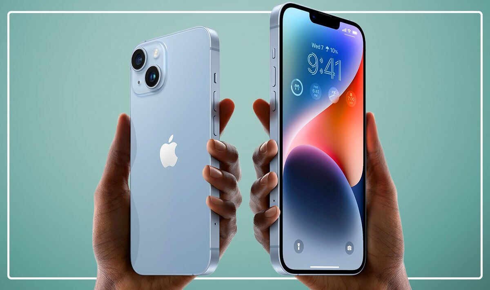
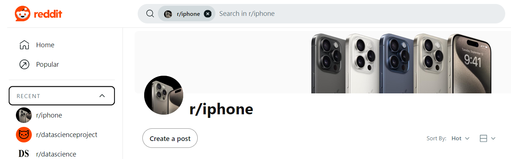

The iPhone Chronicles: Data Stories from the Subreddit
Introduction to the Project
Welcome to our exploration of the "iPhone" subreddit, where we embarked on a journey to unravel the dynamics of this vibrant online community. The "iPhone" subreddit serves as a digital hub where enthusiasts, users, and curious minds converge to share experiences, insights, and discussions about Apple's iconic smartphone.
Our project is driven by the curiosity to understand the heartbeat of this community—what engages its members, what topics ignite passionate conversations, and how the ebb and flow of user activity shape this virtual space.
Goals and Significance
Our overarching goal is to decode the nuanced interactions within the "iPhone" subreddit, providing valuable insights for both the community members and observers. We aim to identify key contributors, uncover popular discussion topics, analyze user sentiments, and enhance the overall user experience. By delving into patterns of user activity, sentiment analysis, and content relevance, we aspire to paint a comprehensive picture of the community dynamics. This endeavor is not just about numbers and data; it's about understanding the community's pulse, fostering meaningful discussions, and contributing to the enriched experience of "iPhone" enthusiasts.
Why We Do This
The significance of this project lies in its potential to bridge the gap between data and community understanding. Unveiling the preferences, sentiments, and patterns within the "iPhone" subreddit not only aids community managers and content creators in tailoring their strategies but also provides community members with a deeper understanding of their collective interests. Beyond the numbers, this project strives to capture the essence of a digital community, where each post, comment, and interaction contributes to a vibrant tapestry of shared experiences.
Appendix: Goals and Technical Proposals
EDA 1
Business Goal: Analyze the top 10 most frequent posters in the “iPhone” subreddit. This analysis can help us understand the most active contributors within this specific subreddit, and could offer valuable insights. That is, these active posters may have a certain level of influence within the community, with their posts potentially attracting attention and responses from other users. This could be helpful in understanding the dynamics of the community and popular topics. Additionally, these posters likely cover various topics and discussions, so, by analyzing their posts, we could discover the most popular topics and trends within the “iPhone” subreddit. This helps in understanding user interest in iPhone products or related subjects. Therefore, we opted to examine the top 10 individuals who post most frequently within the "iPhone" subreddit (both in the submission and comment datasets).
Technical Proposal: We will determine the occurrence count in the 'author' column within both the submission and comment datasets to identify the top 10 most frequent posters. Subsequently, we will present the results in two graphs to illustrate the findings separately.
EDA 2
Business Objective: Uncover activity patterns of user activity in the "iPhone" subreddit, provide valuable insights into the day-to-day rhythms of the platform, and help optimize content delivery and moderation schedules.
Technical Proposal: Technical solution: Define the peak period as the top 5 posts within 24 hours, and the trough period as the bottom 5 posts within 24 hours. Then select a week. We will then extract the relevant timestamps from the submission dataset (using "created_utc"). These timestamps will be grouped by hour (so we have 24 groups), allowing us to calculate the frequency of user activity for each time period. Finally, make an activity distribution chart (the number of posts published in that hour) according to the day of the week.
EDA 3
Business Goal: Statistics on the occurrence frequency of different iPhone versions are discussed to determine which version has a higher level of discussion.
Technical Proposal: Read all Reddit posts, filter out those from the subreddit 'iphone,' use regular expressions to retrieve Reddit posts containing keywords related to iPhone versions, and then count the occurrences. Analyze the level of discussion for each iPhone version from the filtered posts.
NLP 1
Business Goal: When users plan to post about the iPhone 14, the system will suggest potential questions based on historical data, enhancing user engagement and interaction. This approach is designed to enrich the user experience and stimulate user interest in posting.
Technical Proposal: First, posts related to "iphone14" are filtered out. Then, the data undergoes preprocessing. Afterward, Spark NLP and the T5 model are used to analyze these texts and generate questions. These questions are subsequently used as automatic prompts when posting, helping users quickly find popular topics, thereby enhancing community interaction and user experience.
NLP 2
Business Goal: Delve into iPhone-related submitted posts to pinpoint the specific aspects that capture the greatest interest from the community, all while simplifying the identification of clear and comprehensible discussion topics for posts.
Technical Proposal: To achieve this, we will begin by filtering posts related to iPhones. Next, we will manually establish discussion topics specific to the iPhone and label relevant posts accordingly. Subsequently, we will leverage advanced models such as BERT, combined with TF-IDF analysis, to perform topic classification. This approach will allow us to categorize posts into topics and, through post counting, determine the top k most popular discussion topics surrounding iPhones.
NLP 3
Business Goal: Evaluate the sentiment of Reddit users concerning particular Apple product titles, helping understand public perception and sentiment towards Apple products.
Technical Proposal: We will utilize NLP techniques to analyze the content of the body of the essay. By employing sentiment analysis tools, we can classify comments into categories such as positive, negative, or neutral. This approach allows us to quantify the sentiment of the Reddit community regarding Apple product titles, providing a deeper understanding of how users perceive and discuss these products.
NLP 4
Business Goal: Develop the capability to identify instances of sarcasm and irony in user comments around “iPhone” subreddit, enhancing the understanding of nuanced communication on Reddit.
Technical Proposal: We will use a pre-trained NLP model specifically designed for detecting sarcasm and irony within the comments. Subsequently, we will fine-tune and optimize the model using the expansive Reddit dataset. By applying these models, we can systematically identify and deeply study the frequency and context of sarcastic and ironic expressions in user interactions, ultimately shedding light on the complexities of
ML 1
Business Goal: Predicting Popularity of Posts in the iPhone Subsection. By analyzing various post features we intend to create a model capable of distinguishing between popular posts. This model will be a valuable tool for understanding the factors that contribute to a post's success and enhancing user experience within the iPhone community.
Technical Proposal: Begin with Data Preprocessing, selecting posts from 2022 to 2023 for relevance to ensure the dataset's relevance and timeliness. In Target Variable Definition, a Decision Tree Regression model assigns weights to scores and comments, categorizing posts as "popular" or "not." Feature Extraction involves converting post attributes into vectors. Then, we prepare training and validation sets and explore models like Logistic Regression, Random Forest, and Gradient Boosting Trees. This is followed by Model Optimization and Validation. Finally, we use coefficients or feature importance scores to understand the impact of different factors on post popularity.
ML 2
Business Goal: Create an automated system to accurately classify if the content belongs to “iPhone” subreddit or not, improving content organization and user experience.
Technical Proposal: We will collect a large dataset of posts, including the content of the post and their associated subreddit categories. We will then label posts from “iPhone” subreddit with “Yes” and label the others with “No”. This dataset will serve as the training data for our classification machine learning model, designed for the purpose of predicting the most suitable subreddit for a given post. This content classification may need NLP techniques to extract features for each post.
ML 3
Business Goal: Determine whether a comment will be stickied.
Technical Proposal: Retrieve all stickied comments. First, use an NLP model to extract valuable information from the posts, including their topic, sentiment, and other relevant features. Then, train a machine learning model using the processed content along with the score and controversiality. Use the model to predict whether a comment will be stickied.